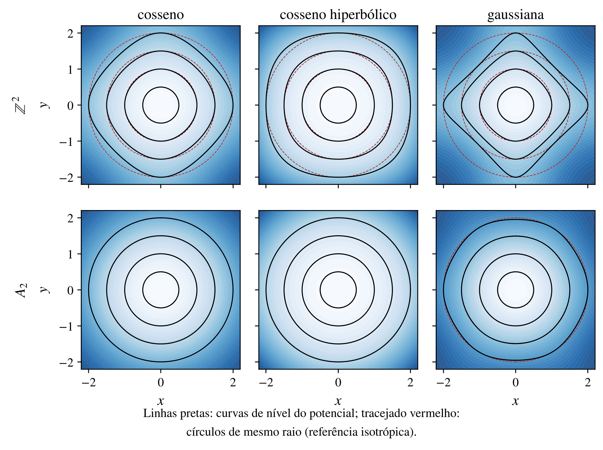
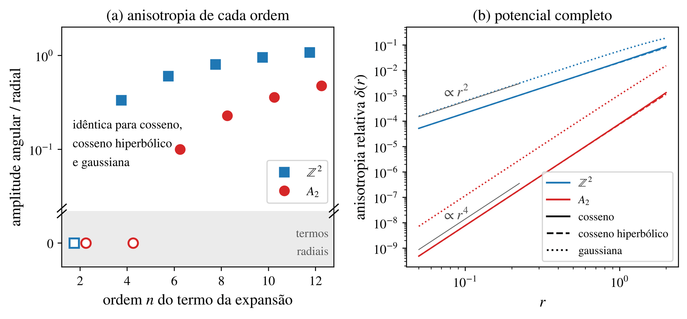
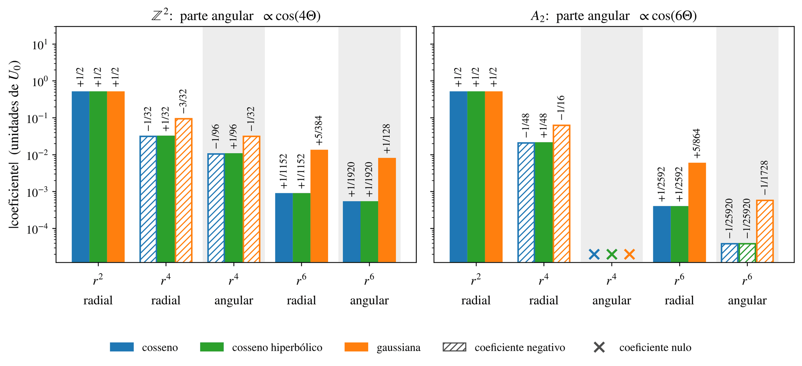

Anisotropia local e designs esféricos
Perto do mínimo, todo potencial de rede parece um oscilador isotrópico. A pergunta é: em que ordem a simetria discreta do reticulado “aparece”? A resposta é um invariante geométrico de \(S\): a força do design esférico.
Expansão em torno da origem
Escreva o potencial como \(V(\mathbf r)=V_0\sum_{\mathbf k\in S} f(\mathbf k\cdot\mathbf r)\) com \(f\) par e \(f(0)=0\). Expandindo \(f(s)=\sum_{n\ \text{par}} a_n s^n\),
\[ V(\mathbf r)=V_0\sum_{n=2,4,\dots} a_n\, r^n\, P_n(\hat{\mathbf u}),\qquad P_n(\hat{\mathbf u})=\sum_{\mathbf k\in S}(\mathbf k\cdot\hat{\mathbf u})^n,\quad \mathbf r=r\hat{\mathbf u}. \]A forma funcional entra só nos coeficientes \(a_n\); a dependência angular de cada ordem está inteiramente em \(P_n\), que depende só de \(S\). Para as três classes estudadas no plano:
\[ f_{\cos}(s)=1-\cos s=\tfrac{s^2}{2}-\tfrac{s^4}{24}+\tfrac{s^6}{720}-\cdots,\quad f_{\cosh}(s)=\cosh s-1,\quad f_{\rm gauss}(s)=1-e^{-s^2/2}. \]Designs esféricos
Aplicando a definição a \(p(\mathbf x)=(\mathbf x\cdot\hat{\mathbf u})^n\), cuja média na esfera não depende de \(\hat{\mathbf u}\), concluímos que \(P_n(\hat{\mathbf u})\) é constante para \(n\le t\):
\[ P_n(\hat{\mathbf u})=M\,|\mathbf k|^n\,\frac{(n-1)!!}{N(N+2)\cdots(N+n-2)}\qquad(n\le t,\ n\ \text{par}). \]Como \(S\cup(-S)\) é antipodal, todos os momentos ímpares se anulam e \(t\) é sempre ímpar. Logo:
Os casos quadrado e hexagonal
Os quatro vetores \(\pm\mathbf e_1,\pm\mathbf e_2\) do \(\Z^2\) formam um 3-design; os seis vetores do \(A_2\) (hexágono), um 5-design. Com a normalização \(\sum\mathbf k\mathbf k^{\mathsf T}=\mathbb 1\) e \(\Theta\) medido a partir de \(\mathbf b_1\):
\[ \begin{aligned} V_{\Z^2}^{\cos}&=V_0\Bigl[\tfrac{r^2}{2}-\tfrac{r^4}{96}(3+\cos4\Theta)\Bigr]+O(r^6), & V_{A_2}^{\cos}&=V_0\Bigl[\tfrac{r^2}{2}-\tfrac{r^4}{48}+\tfrac{r^6}{25920}(10-\cos6\Theta)\Bigr]+O(r^8),\\ V_{\Z^2}^{\cosh}&=V_0\Bigl[\tfrac{r^2}{2}+\tfrac{r^4}{96}(3+\cos4\Theta)\Bigr]+O(r^6), & V_{A_2}^{\cosh}&=V_0\Bigl[\tfrac{r^2}{2}+\tfrac{r^4}{48}+\tfrac{r^6}{25920}(10-\cos6\Theta)\Bigr]+O(r^8),\\ V_{\Z^2}^{\rm gauss}&=V_0\Bigl[\tfrac{r^2}{2}-\tfrac{r^4}{32}(3+\cos4\Theta)\Bigr]+O(r^6), & V_{A_2}^{\rm gauss}&=V_0\Bigl[\tfrac{r^2}{2}-\tfrac{r^4}{16}+\tfrac{r^6}{1728}(10-\cos6\Theta)\Bigr]+O(r^8). \end{aligned} \]O sinal de \(\cos6\Theta\) depende da convenção: medido a partir de um vetor do dual em vez de um vetor da rede, as direções diferem de \(30^\circ\) e o sinal se inverte.



Força do design dos 30 reticulados
Os vetores mínimos de reticulados com grupos de simetria grandes formam designs de força alta (Venkov, 2001). Para os nossos casos, calculada numericamente e consistente com a literatura:
| conjunto \(S\cup(-S)\) | reticulados (potencial) | \(t\) | primeira anisotropia |
|---|---|---|---|
| \(\pm\mathbf e_i\) (politopo cruzado) | \(\Z^N\), \(D_N\) (\(N\ge5\)) | 3 | \(r^4\) (mas separável) |
| hexágono | \(A_2\) | 5 | \(r^6\) |
| mínimos de \(A_n^*\), raízes de \(A_n\) (\(n\ge3\)) | \(A_n\), \(A_n^*\) | 3 | \(r^4\) |
| raízes de \(D_n\) (\(n\ge5\)) | \(D_n^*\) | 3 | \(r^4\) |
| 24-células | \(D_4\) | 5 | \(r^6\) |
| raízes / mínimos do dual de \(E_6\), \(E_7\) | \(E_6,E_6^*,E_7,E_7^*\) | 5 | \(r^6\) |
| raízes de \(E_8\) | \(E_8\) | 7 | \(r^8\) |
O termo quártico isotrópico
Se \(t\ge5\), o termo de quarta ordem é exatamente central. Com \(|\mathbf k|^2=N/M\) (consequência da normalização), a fórmula do design dá
\[ \sum_{\mathbf k\in S}(\mathbf k\cdot\mathbf r)^4=\frac{3N}{M(N+2)}\,r^4 \quad\Longrightarrow\quad V^{(4)}=-\frac{V_0}{24}\,\frac{3N}{M(N+2)}\,r^4 . \]Para o \(A_2\) (\(N=2\), \(M=3\)) isso reproduz o \(-r^4/48\) acima. Quando \(t=3\), medimos a anisotropia quártica por \(\rho_4=\max P_4/\min P_4\) (tabela do Módulo 1). Essa distinção — quártico central ou não — é o que decide o caos a baixa energia (Módulo 4).